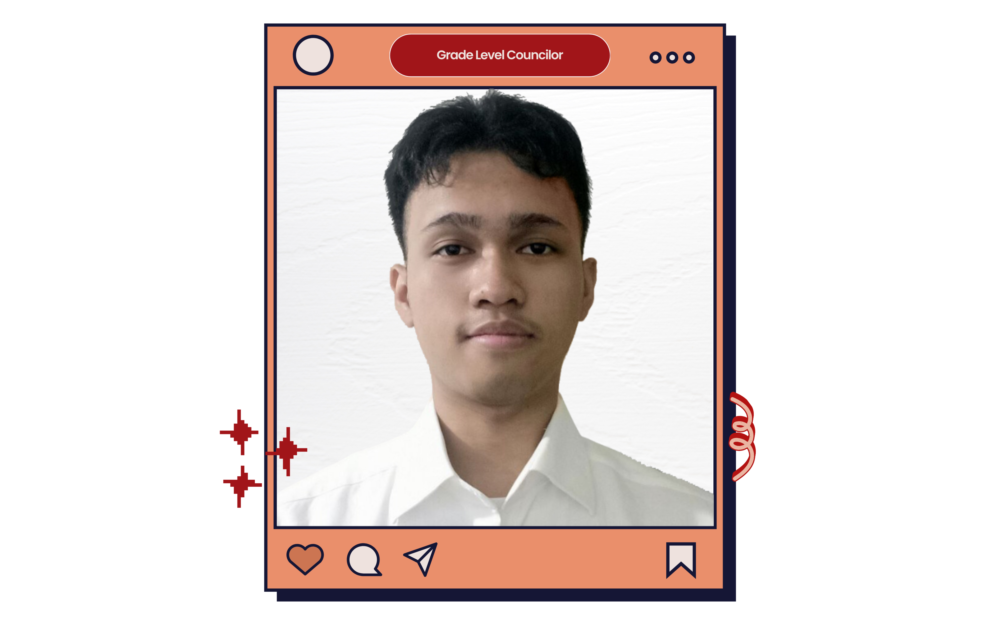

2024 - 2025
About Me

Kris Ezekiel Ballo-Allo
Grade Level Councilor (ICT)
I am Ezekiel, running for the position of Grade Level ICT Councilor. As an aspiring leader, my goal is to pave our paths and create a vision for success. With cooperation from everyone, I believe it is possible to foster unity where each person is valued equally. Together, we can cultivate an orderly learning environment and ensure collaboration to achieve our common goals.
- Former Student Council Councilor (Grade 7)
- “Katutubong Wika: Tungo sa Isang Bansang Filipino.” Photoshop Contest 1st Place
- First Five Basketball Varsity Player in Benedictine School of Cavite
- Intramurals S.Y. 2019-2020 Overall Team Champion
- Scout of the Year Leadership Award S.Y. 2019-2020
- Former Student Council Councilor S.Y. (Grade 8)
- With Honors S.Y. 2020-2021
- Best in Mathematics (Grade 8)
- Best in Computer (Grade 8)
- With Honors (Grade 9)
- With High Honors (1st and 2nd Semester, Grade 11)
- Top 3 with an average of 95 (1st Semester)
- ICT Society Grade 11 ICT-Programming Representative
- Top 2 with an average of 95 (2nd Semester)
